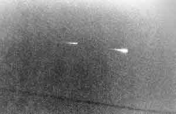

Au National Press Club de Washington (DC), Donald E. Keyhoe tient une conférence de presse du NICAP avec Richard H. Hall,
James E. McDonald et David R. Saunders, contestant les
conclusions du rapport Condon.
Observation à <Crittenton (Virginie)Cas Blue Book n° 12607 non résolu.
Time titre sur "la fin des soucoupes".
Le Washington Post relate que, quelques jours plus tôt, un grand vol de
canards a été frappé de mort subite au-dessus de Saint-Mary's City (Maryland), comme
sil venait d'être touché par une explosion invisible et silencieuse. D'après le quotidien, les oiseaux
souffraient tous de fractures et d'hémorragies avant de toucher le sol.
Jacques Vallée apprend d'un ami que Jerome E. Clark
est devenu si convaincu qu'une invasion extraterrestre est imminente qu'il est au bord d'une crise nerveuse
Kottmeyer, Martin S.: "Still Waiting: A List of Predictions from the 'UFO Culture'", The Anomalist, 1998.
Démission du général De Gaulle.
Le météore photographié par Harkrader
 Klass, P. J.: UFOs - The Public Deceived, Prometheus Books, 1983
À Peoria (Illinois) Alan Harkrader (photographe d'un journal d'alerte) prend un
cliché d'un météore se fragmentant dans le
ciel, permettant d'expliquer les observations de plusieurs pilotes dans la région décrivant un escadron
d'ovnisKlass, P. J.: "Were Kenneth Arnold's UFOs Actually Meteor-Fireballs?", Skeptics' UFO Newsletter #46, 1997-07.
Donald C. Crowhurst laisse un long testament philosophique
dans son journal n° 2.
George Pompidou est élu président de la République.
Le vapeur britannique Maplebank repère un navire d'une vingtaine de mètres de
long qui flotte la quille en l'air.
Création de la NASDA, l'agence spatiale japonaise.
James Earl Carter, alors gouverneur, observe pendant 10 mn environ et en compagnie
de dizaines d'autres témoins un ovni alors qu'il s'apprète à tenir un meeting à Leary (Georgie).
Un Mig 17 cubain se pose en Floride sans avoir été détecté.
L'émission Les Dossiers de l'écran est consacrée aux ovnis, avec comme
support le roman La Guerre des Mondes de Herbert George Wells.
Suite aux recommandations du Rapport Condon,
Robert C. Seamans Junior, secrétaire de l'USAF, annonce la fin du projet Blue Book.
Symposium de l'AAAS sur les ovnis à
Boston (Massachusetts). L'association de scientifiques refuse de cautionner le Rapport Condon.
(A une date entre juillet et juillet 1970) A Fort-de-France (Martinique), depuis la terrasse de son domicile, 2 personnes observent dans
le ciel l'arrivée de la Caravelle venant de la Guadeloupe. Leur attention est attirée par un phénomène lumineux
blanc qui semble dans un premier temps suivre l'avion. A très grande vitesse cette boule de lumière dépasse l'avion
sur une trajectoire rectiligne et disparaît à l'ouest. Aucun bruit particulier n'est entendu durant l'observation
qui est de courte durée () Fait rapporté plusieurs années plus tardGEPAN : PAN classé C.